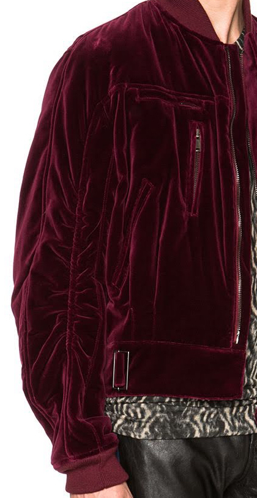
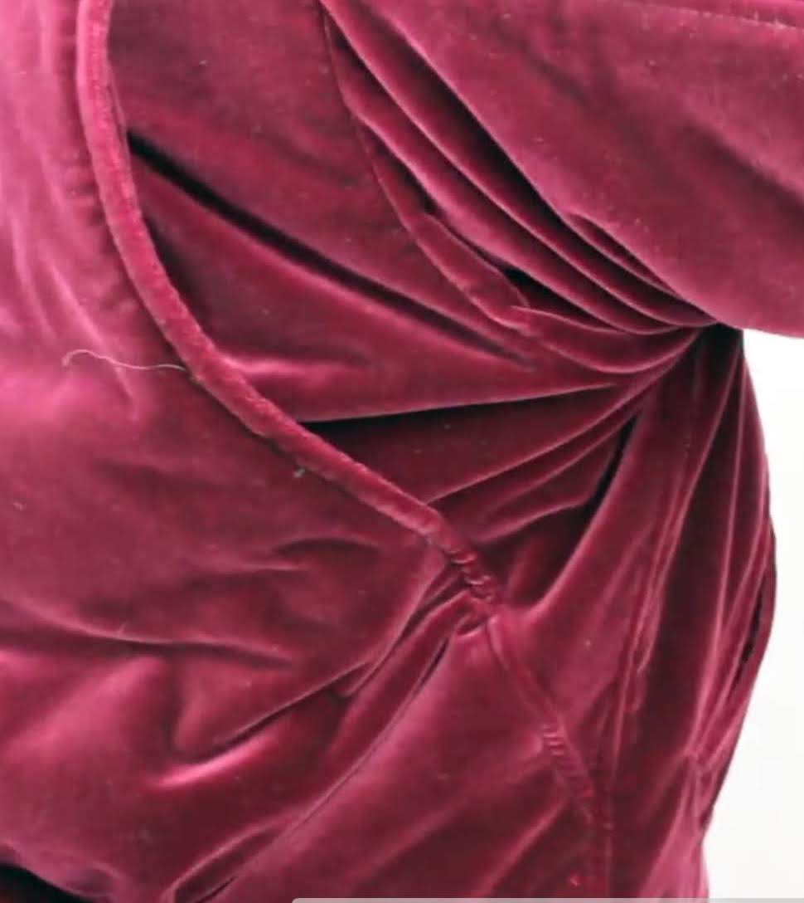

Velvet Bomber
Ever since I saw it, I thought it looked amazing. At first glance what pops out is the rich red velvet fabric. It has a simple design, but the choice of fabric and subtle details of the piece elevate its look slightly. I immediately wanted to get one for myself, but there was an issue... actually multiple:
- It was sold out everywhere
- The asking price for a used jacket reached highs of $4,000 dollars. No, I didn't forget a decimal.
Needless to say, if I wanted one either I'd start saving up for a used car or make it myself.
Design
I am using an online listing of the jacket to gather information on its design.
The jacket is very intricate. The longer I look at it, the more detailed it becomes.
To be honest, my patternmaking skills aren't up to snuff to perfectly recreate the piece. There are small details everywhere in the piece that will take a lot of trial and error to create.
My main concern is the sleeve area. The sleeves are described to be kimono inspired, and it also has gathered sleeves with pleated shoulder plates
The gathered sleeve is a feature I've noticed in many bomber jackets. This jacket has sleeves that are gathered near the elbow area, giving it a draped appeareance

You can also see the Japanese inspired sleeves in this photo. I have made a traditional Japanese garment before and one characteristic of it is its flat design, where you can easily make one with a single piece of fabric(This is for a knitting pattern, but it's a similar concept nonetheless). With the way the garment is constructed it is impossible to lay it flat, but you can see in this picture that the sleeve connects to the chest, making it seem flat since the chest and arm are connected by one flat piece.
Moving to the back of the jacket, there are pleats on its shoulders, which I usually find in older or more utilitaraian garments that aid in increased movement.

I got another closeup from Sangiev's youtube video

Making the pattern
I was lucky to have a jacket at home that had a similar cut and fit to what I was looking for. It's an old leather bomber jacket. It has a boxy cut and its shoulders are patterned into two pieces, making the pleated shoulders easier to make. If the jacket doesn't have this, I found that the piece is 2 inches away from the edge. So just draw a line 2 inches away along the armhole to do something similar.
Assuming that the jacket is Japanese inspired, I patterned it with LOTS of straight lines.
Using similar techniques to WithWendy's youtube video, I made a pattern. The only parts I copied directly from the garment is the armhole and the collar area. For the rest of the pattern, I measured and graphed key points and connected them with straight lines.: Sadly I don't have many pictures of the process but I took these steps:
First, the body/top of the arm. I took measurements and drew lines to section the pieces. mainly:
- Vertically:
- The highest point to the waistband
- The collar to the waistband
- The chest seam to the waistband
- The end of the shoulder to the waistband
- The thickness of the waistband
- Laying flat, the length from the center seam of the arm to the crease on top. Along the wrist
- Horizontally:
- The center to the armpit
- The length of the shoulder + the length of the arm
- The center to the end of the collar
- The waistband(unstreteched) + length of center to end of collar
and copy the shape of any curves. Referencing the picture of the sleeves, you can see the front of the sleeves actually connect to the chest, with no seam between. So I made the front of the jacket like I would a Noragi and the back I traced similar to the leather jacket.
{kind=link}